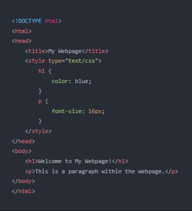
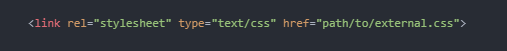
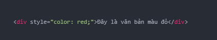
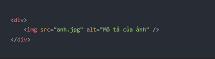

👁 997
Trong CSS, "internal" được sử dụng để chỉ định các kiểu dáng nội bộ cho một trang web. Khi sử dụng phương thức này, các kiểu được đặt trong thẻ style bởi 2 dấu <> trong phần đầu của trang HTML. Ví dụ:
Ở đây, kiểu cho tiêu đề h1 được đặt là màu xanh và kiểu cho đoạn văn bản p được đặt là kích thước chữ 16px. Các kiểu này chỉ áp dụng cho trang web hiện tại.
Trong HTML, thuộc tính "external" được sử dụng để liên kết đến một tệp CSS bên ngoài. Cách sử dụng là:
Trong đó, href là đường dẫn tới tệp CSS bên ngoài.
Trường hợp này thường được sử dụng khi bạn muốn tái sử dụng các quy tắc CSS trên nhiều trang web khác nhau hoặc muốn giữ mã HTML và CSS riêng biệt cho dễ bảo trì.
Trong CSS, một tệp CSS bên ngoài có thể được áp dụng bằng cách sử dụng @import rule trong tệp CSS hiện tại. Ví dụ:
Nhưng cách sử dụng này không được khuyến khích, vì nó có thể ảnh hưởng đến tốc độ tải của trang web. Thay vào đó, nên sử dụng phương pháp "external" đã được đề cập ở trên.
Inline CSS là cách để bao gồm các quy tắc kiểu trực tiếp trong một thẻ HTML. Điều này có nghĩa là, chúng ta sẽ không định nghĩa kiểu trong một tệp CSS riêng biệt, mà sử dụng thuộc tính "style" để định nghĩa kiểu trực tiếp trong thẻ HTML.
Ví dụ, để đặt màu văn bản thành màu đỏ trong một thẻ div, bạn có thể sử dụng inline CSS như sau:
Inline HTML là cách để bao gồm mã HTML trực tiếp vào trong một thẻ khác. Ví dụ, bạn có thể sử dụng inline HTML để chèn một hình ảnh vào trong một thẻ div như sau:
Trong cả hai trường hợp, sử dụng inline kiểu và HTML sẽ giúp dễ dàng điều chỉnh nhanh chóng, tuy nhiên, khi phải áp dụng cho nhiều thẻ hoặc nhiều trang web, nó không được khuyến khích sử dụng bởi nó làm giảm khả năng tái sử dụng mã và làm tăng kích thước của trang web.
Vì các phương pháp này có những ưu điểm và hạn chế riêng, do đó, việc lựa chọn sử dụng internal, external hay inline CSS phụ thuộc vào nhu cầu và yêu cầu của từng trang web cụ thể.
Internal CSS là phù hợp cho các trang web nhỏ hoặc chỉ gồm một số trang. Nó có thể giúp tăng tốc độ tải trang vì không cần tải thêm một tệp CSS bên ngoài, nhưng lại khó quản lý khi có quá nhiều kiểu được định nghĩa.
External CSS là phù hợp cho các trang web lớn hoặc có nhiều trang. Nó giúp quản lý kiểu dễ dàng và có thể tái sử dụng mã CSS ở nhiều trang khác nhau. Tuy nhiên, việc tải tệp CSS bên ngoài có thể làm giảm tốc độ tải trang nếu tệp CSS quá lớn hoặc máy chủ chậm.
Inline CSS là phù hợp cho các trang web có ít kiểu và cần điều chỉnh nhanh chóng. Tuy nhiên, nó làm tăng kích thước của trang web và làm giảm tính tái sử dụng mã CSS. Do đó, nó không được khuyến khích sử dụng trong các trang web lớn hoặc có nhiều trang.